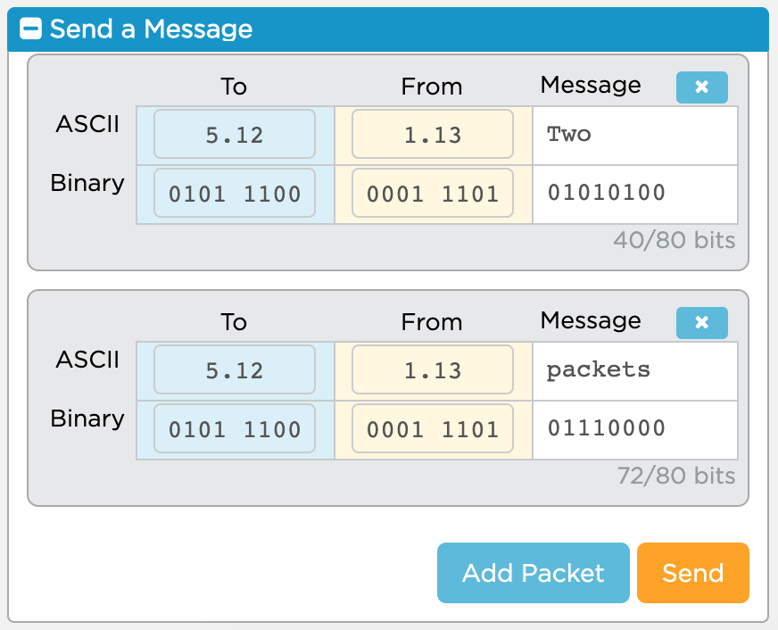
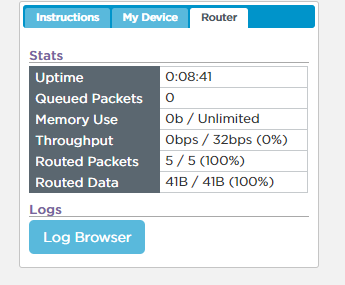
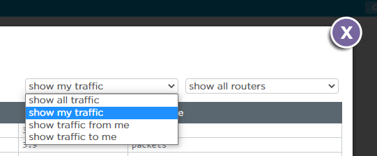

Suppose our school library is moving to a new building on campus and you have been hired to help.
What approach would you take if you just needed to clear out the space by the end of the day?
How would your approach change if you had more time and wanted to check that every book made it safely and was on the same shelf it was on before the move?
Sometimes we need to send really large messages over the internet, like movies or large pictures. Just like moving your entire school library, there are problems that arise when we want to send large messages on the internet.
Today we’re going to learn about two different protocols for sending information online: one that’s used when all we care about is speed, and one that’s used when accuracy is more important.
In lesson 2.4 we learned that messages can take different paths to get to the same place on the Internet. Remember that fact as we explore these protocols.
Use the Internet Simulator to have a short conversation about either:
Try to figure out what’s new with the Internet Simulator. You’ll have 5 minutes to explore and tell me what has changed on the next slide.
What has changed with the Internet Simulator?

Open the activity guide and read the first paragraph. In as short a summary as possible, explain why the Internet divides messages into packets.
Use the ADD PACKET button to create a message with 5–10 words, one word per packet, and send it to your partner.
Open the router Log Browser.

Choose “Show My Traffic” and “Show All Routers” to see the path your message takes through the network.

From what you see, answer the first two questions on the Activity Guide.
Protocol 1 has some issues, as we just saw. Packets can arrive out of order or totally get lost, and there’s no way for the computer to tell what happened.
That said, it’s a really simple protocol, and it’s fast. In the real world, this is known as UDP, or User Datagram Protocol.
There are two protocols commonly used to send packets online, and depending on the situation, websites or apps will choose the one that makes sense.
With your partner, discuss rules for a protocol that can address the challenges presented by Protocol 1. The sender should be able to construct a single multi-packet message and send it at once. Afterwards, the sender and receiver can communicate to fix any errors they encounter.
Consider:
Copy and paste your protocol’s rules below. We’ll take a look at the board together once everyone has posted.
Send your message to your partner again. This time, follow your new protocol. Does it work?
Do you need to make some changes to it? Update your rules on the Activity Guide if you find something that needs improvement.
Your Protocol 2 is a lot like the second protocol websites and apps use when accuracy matters more than speed.
Click two cards to test whether they match. Each term has one definition somewhere on the board.